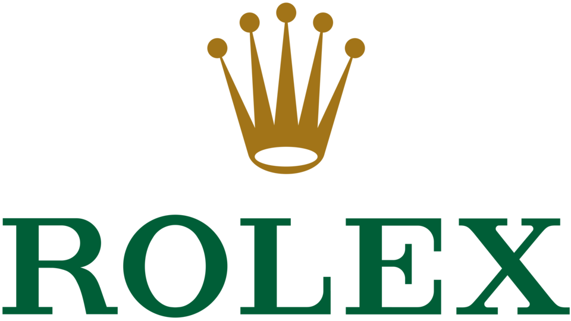

홈 > 브랜드 매거진 > 롤렉스
롤렉스
롤렉스(Rolex)는 스위스 제네바에 본사를 둔 럭셔리 시계 제조사이다.
산업 분야 패션·럭셔리 · 공개 등급 편집 검수 · 브랜드 평가 4.7 ★


한눈에 보는 브랜드
롤렉스는 1905년 한스 빌스도르프가 런던에서 처남 알프레드 데이비스와 함께 창업한 시계 회사로, 이후 본사를 제네바로 옮겨 스위스 시계의 정상에 올랐다. 1926년 방수·방진 오이스터 케이스, 1931년 자동으로 태엽을 감는 퍼페추얼 로터라는 두 전환점으로 손목시계의 기술 기준을 다시 썼다.
2024년 추정 매출 약 105억 스위스프랑, 연간 생산 약 118만 점으로 스위스 시계 시장의 약 32%를 점유하는 최대 제조사다.
브랜드 관점
파텍필립이 연 약 6만 점 안팎의 초소량 복잡시계로 희소성을 빚는다면, 롤렉스는 약 118만 점 규모의 대량 생산 속에서도 공급을 의도적으로 조여 대기 명단과 프리미엄을 유지한다. 가격 인상에 기댄 오메가가 2025년 순위에서 밀린 것과 달리, 롤렉스는 물량을 늘리지 않고 평균 단가를 끌어올려 매출을 키웠다.
한스 빌스도르프 재단이 지분을 쥔 비상장 구조라 분기 실적 압박에서 자유로운 점이 장기 통제의 토대다. 2023년 8월 최대 소매 파트너 부커러를 약 30억 스위스프랑 규모로 인수해 제조부터 유통까지 공급망을 직접 장악한 것도 중대한 변화다.
한국에서는 2024년 상반기 명품시계 리셀 거래의 67.7%를 차지하며 시장을 주도했다.
시작과 성장
1905년 한스 빌스도르프는 런던에서 알프레드 데이비스와 윌스도르프 앤드 데이비스(Wilsdorf and Davis)를 세우고, 스위스 에글러사의 무브먼트를 들여와 케이스에 담아 영국에 공급했다. 1908년 롤렉스 상표를 등록했고, 제1차 세계대전 이후 영국의 높은 관세와 불리한 환경을 피해 1919~1920년 무렵 본사를 제네바로 옮겨 몽트르 롤렉스 SA를 설립했다.
1926년에는 세계 최초의 방수·방진 손목시계인 오이스터 케이스를 내놓았고, 1927년 메르세데스 글라이츠가 이 시계를 차고 영국 해협 횡단 수영에 나서 10시간 넘게 물속에 있고도 멀쩡한 모습을 입증하며 방수 성능을 알렸다. 이어 1931년 회전추로 태엽을 자동으로 감는 퍼페추얼 로터를 개발해 손으로 감던 방식을 끝냈다.
브랜드 아이덴티티
롤렉스의 정체성은 정밀함과 성취의 상징이라는 한 문장으로 모인다. 다섯 갈래 왕관 로고는 장인정신과 시장 선도를 나타내고, 금색 글자와 깊은 초록 바탕은 영속성·번영·배타성을 표현한다.
초록은 스위스의 푸른 자연에서 따왔다고 알려져 있다. 핵심 타깃은 성공을 기념하려는 성취 지향 소비층이며, '모든 성취에는 왕관을(A Crown for Every Achievement)'이라는 초기 슬로건이 그 목소리를 압축한다.
견고함과 신뢰, 절제된 권위를 일관되게 내세운다.
제품과 서비스
대표 라인은 다이버 시계 서브마리너, 클래식 데이트저스트, 크로노그래프 데이토나, 두 시간대를 읽는 GMT마스터다. 미국 정가 기준 서브마리너는 약 9천1백~1만8백 달러, GMT마스터 II는 약 1만7백 달러, 데이토나는 약 1만4천8백 달러, 데이트저스트는 평균 1만1천 달러 선이다.
판매는 공인 딜러 중심으로 이뤄지며, 인기 스포츠 모델은 수년에 이르는 대기 명단이 흔하다.
현재 상태
본사는 스위스 제네바에 있으며, 회사는 한스 빌스도르프 재단이 소유한 비상장 기업이다. 2024년 생산량은 약 118만 점으로, 전년보다 물량을 줄이는 대신 평균 단가를 약 1만3천 스위스프랑까지 끌어올렸다.
같은 해 도매 기준 추정 매출은 약 105억 스위스프랑이나, 시장조사기관이 추산한 값일 뿐 회사가 공식 발표한 적은 없다. 영업이익 등 세부 재무는 비상장 특성상 미공개다.
타임라인
BI/CI 변천사

대표 로고대표 브랜드 마크함께 읽을 브랜드
오메가(OMEGA)는 스위스 스와치 그룹 산하의 럭셔리 시계 제조 브랜드이다.
 패션·럭셔리 · 자료 기반태그호이어
패션·럭셔리 · 자료 기반태그호이어태그호이어(TAG Heuer)는 1860년 에두아르 호이어가 설립한 스위스 고급 시계 제조사이다.
 패션·럭셔리 · 편집 검수랄프 로렌
패션·럭셔리 · 편집 검수랄프 로렌랄프 로렌(Ralph Lauren)은 1967년 미국에서 설립된 럭셔리 라이프스타일·패션 브랜드이다.
 패션·럭셔리 · 편집 검수버버리
패션·럭셔리 · 편집 검수버버리버버리(Burberry)는 1856년 설립된 영국의 럭셔리 패션 하우스이다.
비비안 웨스트우드(Vivienne Westwood)는 펑크를 주류 패션으로 끌어올린 영국의 독립 럭셔리 패션 브랜드이다.
 패션·럭셔리 · 편집 검수폴 스미스
패션·럭셔리 · 편집 검수폴 스미스폴 스미스(Paul Smith)는 영국의 클래식 테일러링에 위트와 색채를 결합한 독립 패션 브랜드이다.
 패션·럭셔리 · 자료 기반몽클레르
패션·럭셔리 · 자료 기반몽클레르몽클레르(Moncler)는 1952년 프랑스에서 설립돼 현재 이탈리아에 본사를 둔 럭셔리 다운재킷 브랜드이다.
 패션·럭셔리 · 매거진 완성스와치
패션·럭셔리 · 매거진 완성스와치스와치는 시계를 고가의 정밀기기에서 매일 바꿔 착용할 수 있는 패션 언어로 전환했다. 시간을 알려주는 기능보다 색, 그래픽, 컬렉션, 가벼운 가격대가 브랜드 경험의...